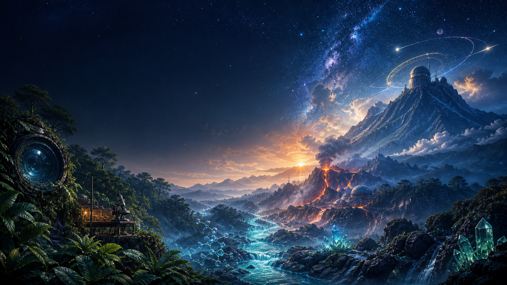

Ask
Choose a subject and share what you want to understand.

Expedition 01 · Virtual Field Station
Your AI-powered learning companion for Biology, Chemistry, Physics, and General Science. Explore chapters, work through experiment guides, test your understanding, and review with flashcards.
Your expedition begins
Choose a topic, ask a question, or bring a document. The lab builds a clear path from first explanation to hands-on practice and review.
Rainforest Station · Biology
Explore cells, systems, and ecosystems with chapter maps that turn complex topics into understandable connections.
Crystal River · Chemistry
Turn reactions and atomic behaviour into guided procedures, visual explanations, and safety-aware experiments.
High Ridge · Physics
Ask “what if?”, change the conditions, and build intuition for motion, energy, waves, and forces.
The field method
No complicated setup. Follow one repeatable learning loop.
Choose a subject and share what you want to understand.
Receive a structured explanation, guide, or simulation.
Test the idea with experiments, quizzes, and flashcards.
Return to your dashboard and continue the expedition.
Summit Observatory
Open the dashboard, choose your scientific path, and let the lab guide the next step.